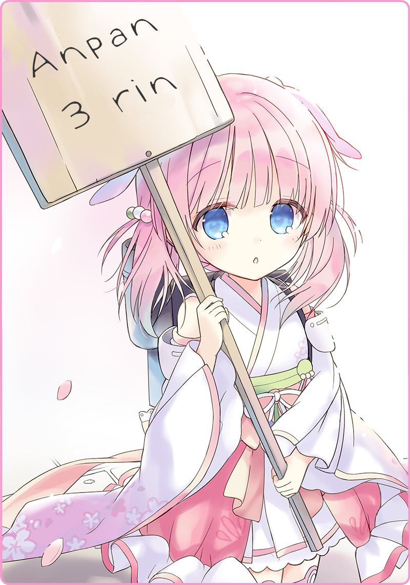

Làm người ai cũng chào đời bằng tiếng khóc.
Trước đó, họ được bao bọc bởi hơi ấm nơi lòng mẹ và chìm đắm trong chốn thiên đàng mà không thiết chi ăn uống, hít thở hay bỏ công duy trì sự sống. Mặc nhiên, việc được sinh ra trong cái thực tế khắc nghiệt này sẽ không thể tránh khỏi những lời than thân trách phận.
Ngẫm nghĩ một chút sẽ thấy, rằng thế giới này chỉ chất chứa đầy rẫy bất công.
Nào là những gia đình đắm đuối trong sa đọa, rồi lại đến những gia đình bần hàn quanh năm suốt tháng phải bán mình cho công việc để mà nuôi sống bản thân cùng người nhà. Nhưng cũng có người được sinh ra mà theo cách ví von của dân ngoại quốc là “ngậm thìa bạc trong miệng”. So với đó thì, tôi được chào đời trong cảnh không thể tồi tệ hơn. Người ta kể lại rằng, mẹ có mang tôi rồi rời đất liền để đi làm xa, dọc đường thì có dấu hiệu chuyển dạ nên đã hạ sinh tôi trong kho hàng tối tăm trên thuyền. Nước tắm đầu của tôi khi ấy là nước biển, cố nhiên ngay từ khi sinh ra miệng tôi đã ngập tràn vị mặn. Có lẽ cũng vì thế mà giờ đây cứ thứ gì ngọt sắc là tôi rất thích.
Gió đưa những cánh hoa đào nhảy múa khắp không trung.
Ánh hào quang bao bọc lấy Hoàng Đô mang một vẻ đẹp thật vô tư. Trời nắng, nắng đến mức làm tôi toát cả mồ hôi trong lúc rảo bước, khiến tôi vô thức phanh cổ áo ra.
Khi đến gần cầu Mokudai – một cây cầu diễm lệ nối liền quận Hai và quận Ba của Hoàng Đô, tôi đi ngang qua một cô gái khoác trên mình bộ hakama mới tinh. Trông cô ta cũng trạc tuổi tôi, có vẻ như là học sinh sắp lên năm nhất cao trung trong mùa xuân này. Để học hành, vui đùa, kết bạn… hay thậm chí là mưu cầu tình yêu. Phải thú thật là, bất giác tôi cảm thấy ghen tị với cô ấy.
Về phần tôi, tôi tốt nghiệp một trường quốc lập… Tuy nhiên, tôi lại không thể học lên cao được, và cũng khó lòng yên thân trong nhà, nên từ năm ngoái tôi đã ra ngoài làm công. Tôi tá túc trong một dinh thự nguy nga và làm việc ở đó với thân phận người hầu. Dù vậy, cảm giác cũng không tệ lắm. Tôi vốn không ghét làm việc nhà và các tiền bối khá mến tôi. Có lần tôi hỏi ý kiến bà chủ về ý định tự mình kinh doanh, thế là bà ấy chỉ bảo tôi về mọi thứ từ cách ăn mặc cho đến ứng xử và phong thái của một doanh nhân. Vậy là tôi quyết định lưu lại đó và dành dụm thêm một ít tiền.
Thế nhưng vào mùa đông, nhà chủ tôi bị phá sản và mọi kế hoạch của tôi tan thành mây khói. Mãi sau này tôi mới biết đó là hậu quả đến muộn của cuộc suy thoái hậu chiến. Dân chúng nổ súng vào nhau và biến tất cả đám
Hình nhân Chiến đấu xa xỉ đó thành đồng nát mà không thiết quan tâm tới tất thảy sự thể trên đời…
Đến lúc dọn dẹp tàn cuộc thì cuộc đời tôi cũng vì nó mà đi chệch đường ray.
Kể từ đó, tôi phải lăn lộn làm những công việc tạm bợ trong ngày để kiếm chác từng chút một, song gần đây cơ hội sinh kế ngày càng khan hiếm. Những đồng xu cuối cùng tôi tích cóp được cũng đang cạn dần. Lần nào nhòm vào túi cũng chỉ có đồng 3 rin
[1] lạnh giá nhìn lại tôi… Cả ngày hôm nay tôi chỉ húp được một chút nước nóng, bụng của tôi đã sôi lên từ lúc nào rồi.
Và khi đó…
Một biển hiệu xuất hiện trước mặt tôi.
[Anpan 3 rin]
Tôi không thể nào tin vào mắt mình. Phép màu giao thoa giữa văn hóa Đông-Tây, Đế vương Đồ ngọt lại được bán với giá 3 rin?! Nếu mua ở quán Murakiya bên quận Hai thì 10 rin có khi còn chưa đủ! Quá là khác thường! Với cái giá này thì tôi có thể vô tư mua nó bất chấp ngân khố thảm thương của mình. Và như thế, tôi nhanh chân chạy đến đứng trước mặt cô bé cầm biển hiệu.
"Làm ơn!"

Em nghiêng đầu nhìn tôi một cách tò mò. Tóc phớt nhẹ sắc hồng anh đào, đôi mắt xanh biếc như ngọc lưu ly. Những đường nét mềm mại trên má làm nổi bật lên vẻ trẻ thơ nơi em; lớp furisode trên người em nhẹ nhàng tung bay trong gió. Sau lưng em là một chiếc cặp màu xám, tương phản hoàn toàn với dung nhan rạng rỡ. Nhô lên từ đó là một ống khói nhỏ có hơi nước thoát ra.
"…à ờ… cái này…"
Tôi đứng trố mắt ra nhìn em, còn em thì mỉm cười bẽn lẽn.
"A, lịch sự ghê…"
"Hơ?"
Em cười khúc khích.
"Không, cái này…"
Tôi cân nhắc xem nên nói gì… Cuộc đối thoại vừa rồi có vẻ khá lạc quẻ, nhưng xem chừng tôi đã biết nguyên nhân rồi.
"Em là Hình nhân sao?"
Tôi đã không nghĩ rằng mình có thể nhìn thấy một Hình nhân Tự hành lần nữa, bởi sau cuộc chiến chỉ còn lại số ít ở Hoàng Đô. Cảm giác thật hoài niệm, khiến mắt tôi có chút cay cay.
Em nhìn tôi bằng ánh mắt vô tư, tuyệt nhiên không vương chút nhục cảm nào.
Tôi chưa bao giờ nghĩ rằng Hình nhân Tự hành lại có thể nhỏ nhắn đến nhường này… phải chăng là vì bây giờ tôi đã lớn hơn trước rồi?
"Vậy thì, Haizakura?"
"Tôi muốn mua một cái anpan."
Tôi ngừng chìm đắm trong hoài niệm và đi thẳng vào trọng tâm vấn đề.
"Em là người bán hàng đúng không?"
Em liếc nhìn tấm biển của mình như thể đây là lần đầu trông thấy nó.
"Ừ, tôi muốn mua."
Tôi trả 3 rin của mình kèm theo tiếng leng keng.
Bên cạnh Haizakura, có một cái bàn cùng với một chiếc giỏ lớn hơn, một cái két nhỏ, và một tủ kính bên trong bày các mẫu bánh. Chiếc anpan mẫu được cắt một đường ở giữa, tự hào khoe ra độ kết dính của nhân bên trong; hạt mè ở trên cũng cân đối một cách hoàn hảo.
Haizakura ré lên bằng một thứ ngôn ngữ kỳ lạ khi em nhìn vào giỏ.
"Sao thế?"
"Ồ… ra là vậy à."
Đúng là khi nhìn lại lần nữa thì chiếc giỏ đã rỗng từ đời nào rồi.
"Vậy bán tôi cái mẫu kia nhé."
Nếu như đã hết hàng thì đành chịu thôi, nhưng lại có một chiếc cuối cùng ở ngay kia cơ mà.
"Ủa? Có khi nào là hàng không bán được hả?"
"Nó bị khô hay không ăn được hay sao?"
"Hay em làm rơi nó rồi?"
"…vậy cái này là để em ăn hả?"
Cô bé nhảy bật lên như một chú thỏ và lùi ra khỏi tôi.
"À… ừ thì…"
Chẳng cần nói tôi cũng đoán được.
"…hà…"
Tôi xoa xoa cái bụng đang réo lên vì tiếc nuối.
"Thôi thì, nếu em còn mỗi một cái thì cũng đành chịu…"
Em giữ chặt lấy gấu áo của tôi.
Em cố gắng giữ tông giọng của mình, nhưng nó dần trở nên chùng xuống vào nửa cuối câu.
Em mở chiếc tủ kính ra và đưa cho tôi chiếc anpan.
Hương men và đậu đỏ tạo nên một thứ mùi lôi cuốn và trêu ngươi mũi tôi.
"Vậy, tôi không khách sáo nhé."
Khi tôi nhấc chiếc anpan đã được xẻ đôi lên, nó vẫn còn ấm.
"Này."
"Nếu em muốn thì ta chia đôi nhé?"
Haizakura nhìn chòng chọc như muốn ăn tươi nuốt sống tôi vậy.
"Tất nhiên rồi, mời em."
Tôi đưa cho em một nửa chiếc anpan.
Em nom xúc động tới mức không thể cầm lòng được…
Hơi nước bốc ra từ ống khói sau lưng em.
Làm người ai cũng chào đời bằng tiếng khóc.
Vậy, những cô gái Hình nhân được sinh ra ở trạng thái gì?
Có lẽ là một nụ cười rạng rỡ, đem lại hy vọng cho thế giới này.
[1] Đơn vị tiền tệ cổ, 1 rin = 0,001 yên.

 "…myu?"
"…myu?"